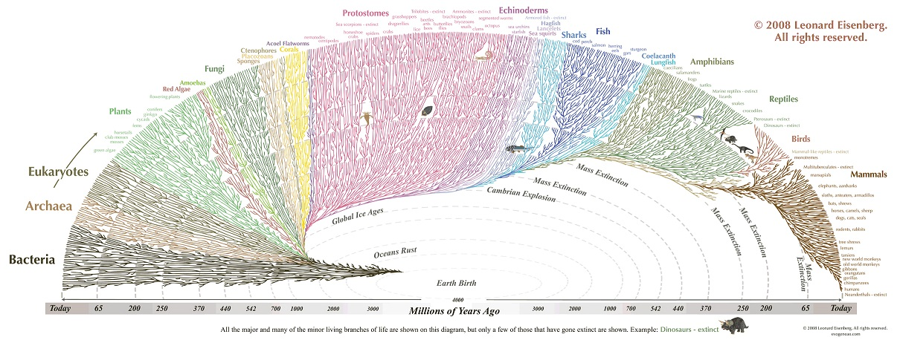

Biology
Einteilung der Lebewesen (Biosystematik)
- Lebewesen
- (Notiz: Viren gelten nicht als Lebewesen.)
- Domäne
- z.B. Bakterien, Archaeen, Eukaryoten
- Reich
- z.B. Tiere, Pflanzen, Pilze
- Stamm
- z.B. Algen, Wirbeltiere, Weichtiere
- Klasse
- z.B. Säugetiere, Amphibien, Reptilien, Vögel, Insekten
- Ordnung, Teilordnung, Überfamilie
- Familie, Unterfamilie, Tribus
- Gattung
- Art
Beispiel Mensch:
- Reich: Vielzeller
- Stamm: Wirbeltiere
- Klasse: Säugetiere
- Ordnung: Primaten
- Familie: Menschenaffen (Hominidae)
- Unterfamilie: Homininae
- Tribus: Hominini
- Gattung: Homo
- Art: Mensch
Evolution
12 Epochen
Paläozoikum (Erdaltertum 288 Ma)
Präkambrium (3,5 Mrd - 542 Mil)
Bakterien, Viren, Photosynthese, Vielzeller,
Photosynthese betreibende Cyanobakterien produzieren Sauerstoff. Es kommt zur Bildung der Ozonschicht und mithin zum Schutz vor UV-Strahlung. Den meisten Bakterien im Meer bringt der giftige Sauerstoff allerdings den Tod.
Entwicklungssprung: Eukaryoten
Eukarytoen (ca. 2 Mrd)
Zwei Bakterien vereinigen sich zum wechselseitigen Vorteil. Das umschlossene Bakterium bildet am Ende den Zellkern (Mitochondrium) mit der Aufgabe Energie in Form von ATP (Adenosintriphosphat) herzustellen und das Erbgut zu verwalten.
Die ersten Vielzeller (ca. 1.2 Mrd)
Irgendwann nach der Sauerstoffkatastrophe beginnen Eukaryoten sich Cyanobakterien einzuverleiben. Irgenwann kommt es dazu, dass sich ein solches Bakterium nach der Zellteilung nicht vollständig trennt. Die ersten Mehrzeller entstehen.
Kambrium (541 - 485,4)
Zu Beginn des Kambriums: Kambrische Explosion

Ordovizium (485,4 - 443,4)
Silur (443,4 - 419,2)
Devon (419,2 - 358,9)
Karbon (358,9 - 298,9)
Perm (298,9 - 252,2)
Mesozoikum (Erdmittelalter 186 Ma)
Trias (363,2 - 201,3)
Jura (201,3 - 145)
Kreide (145 - 66)
Paläogen (66 - 23)
Känozoikum (Erdneuzeit, 66 Ma)
Neogen (23 - 2,5)
Quartär (2,5 - 0)
Die 5 großen Massensterben
- Ordovizium
- Devon
- Perm
- Kreide
Evolution des Menschen
Menschen gehören zur Familie der Hominidae (eingedeutscht: Hominiden, Menschenaffen), die entsprechende Gattung ist Homo.
Vorgeschichtliche Arten:
- Ardipithecus (6-4 Mio. Jahre)
- Ardipithecus ramidus: Der erste, der aufrecht geht. Lebte aber noch im Wald.
- Vormenschen: Australopithecinen (4-2 Mio. Jahre)
- Urmenschen: Homo rudofensis, Homo habilis, Homo ergaster, Homo heidelbergensis, Homo erectus
- Frühmenschen:
Australopithecinen
- aufrechter Gang
- A. anamensis
- A. afarensis Berühmter Skelettfund: Lucy
Homo
(Info from Wikipedia.)
- H. rudolfensis (2.5 - 1.9 Mio. Jahre)
- H. erectus (2 - ? Mio. Jahre)
- H. ergaster (1.9 - 1.4 Mio. Jahre)
- H. habilis (2.1 - 1.5 Mio. Jahre)
- H. heidelbergensis (600.000 - 200.000 Jahre)
Aus Homo habilis oder Homo rudolfensis (man weiß es nicht genau) entsteht Homo ergaster. Er ist der erste Homo der Afrika verlässt. Aus Homo ergaster entwickelt sich einerseits, außerhalb von Afrike, Homo erectus, der es bis nach Asien schafft. Andererseits, noch in Afrika, Homo heidelbergensis. Dieser wandert in Europa ein und entwickelt sich dort zum Homo neanderthalis. In Afrika entwickelt er sich weiter zum Homo sapiens. Vor ca. 100.000 Jahren dringt Homo sapiens bis in den nahen Osten vor, zieht sich danach aber wieder nach Afrika zurück. Vermutlich kommt er mit der Kälte nicht gut zurecht. Vor 60.000 Jahren wandert eine kleine Gruppe über die arabische Halbinsel aus und bevölkert die letztlich ganze Welt. Vor 45.000 Jahren nach Australien, vor 15.000 Jahren nach Amerika.
Viren
Haben keine eigenständige Replikation und sind deshalb auf den Stoffwechsel einer Wirtszelle angewiesen.
Viren kommen in zwei Erscheinungsformen vor:
- Als DNA oder RNA in der Zelle eines Wirts.
- Als DNA oder RNA in einer Proteinhülle (Virion).
Übertragung
- Blut
- Luft
- Schmierinfektion